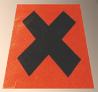

Les
liants et vernis
polyuréthanes
Lire
en premier de préférence
l'article du glossaire
consacré à l'uréthane
A lire en complément,
un article
du Courrier des Lecteurs consacré
à la "peinture à la résine"

Les polyuréthanes (n.m.) sont des polymères
associant méthane,
azote et oxygène avec d'autres
molécules hydrocarbonées, l'ensemble formant deux fonctions chimiques de base :
les polyols et les isocyanates.
Ces produits ne sont pas anodins !
Les résidus de leur décomposition thermique sont
l'eau, le cyanure, le méthane, le dangereux monoxyde de carbone, etc. On trouve en effet
dans la formule du monomère les composants
potentiels CH4, HCN, CO et H2O. Rapide
exposé chimique imprécis et incomplet surtout destiné à rendre compte du
fait majeur que les polyuréthanes ne sont pas des produits qui peuvent être
employés avec autant de confort que l'aquarelle !
Certains d'entre eux - notamment des résines
destinées à la sculpture, mais pas exclusivement - se présentent sous la forme de deux composants à
mélanger. Ils doivent être manipulés avec de grandes précautions car l'un
des deux est un composé à base de cyanure, l'autre, nommé
"catalyseur", est une sorte de résine adjointe de stabilisants et
produits divers, dont quelquefois, paraît-il, des hydrocarbures
benzéniques. Les auteurs s'accordent à signaler que le bicomposant peut
être dangereux alors que le composé unique est plus stable, bien que par
exemple la découpe de polyuréthane même solide ou tout autre pratique
produisant de la poussière peut provoquer des irritations des yeux et des voix
respiratoires (source RepTox CSST). Il y a lieu de s'intéresser de près à la formulation chimique
des bicomposants comme des monocomposants.
Il s'agit de liants gras dont les diluants, solvants
et dissolvants sont les produits habituellement employés pour ce type de
substances. On mentionne notamment un emploi courant de l'acétone.
Cependant, il est difficile de décrire un cas général étant donné que ces
molécules connaissent d'innombrables déclinaisons. Par exemple, certaines
variétés sont diluables à l'eau, d'autres à l'essence.
Particulièrement adapté aux vernis et à la peinture sur supports métalliques, ce produit donne
un grand nombre de matériaux. Sans vouloir faire un recensement exhaustif, nous
avons créé une liste surtout basée sur des utilisations potentielles en arts
plastiques et domaines voisins :
* un apprêt pour métaux
* une peinture destinée notamment aux carrosseries automobiles. Dans un
premier temps, un produit pulvérulent est projeté sur la surface à
peindre à l'aide d'un compresseur. Par la
suite, pour fixer la "poudre", une résine polyuréthane très solide est
projetée par-dessus, jouant le rôle de vernis. Ce vernis, comme tous les
vernis polyuréthanes, a la réputation de jaunir
* un vernis très résistant (à l'eau de mer, etc.), mais jaunissant vite
également.
Il n'a plus tendance à craqueler (défaut de jeunesse qui a été
éliminé)
* une longue liste de vernis plus fins destinés aux bois d'intérieur. Le
polyuréthane constitue même l'essentiel de l'offre en terme de vernis à
bois contemporains. On leur prête différents défauts : ils auraient une
certaine tendance à jaunir ; corps gras, ils
noirciraient les veines du bois (un traitement préalable à la poudre de
ponce pourrait empêcher cela).
* des vernis composites dits "alkydes modifiés uréthane", souples et
moins jaunissant
* des peintures composites dites "polyuréthane acrylique"
* des colles et des adhésifs. La colle utilisée
dans la fabrication du bois MDF pourrait être une
forme de polyuréthane ou un produit proche (on parle des colles "UF",
urée-formol).
* de nombreux produits destinés au moulage (élastomères) et surtout au coulage
(mousses, résines dures ou souples, parfois très résistantes, colorées ou
transparentes).
Certains peintres travaillant sur des supports métalliques ou autres
mentionnent l'emploi de :
* mastic polyester en préparation des volumes
(il serait employé par les garagistes pour les carrosseries)
* d'un apprêt spécialement destiné à la peinture polyuréthane
* de peinture polyuréthane sous forme pulvérulente employée
conjointement à un vernis-catalyseur polyuréthane.
Retour
début de page